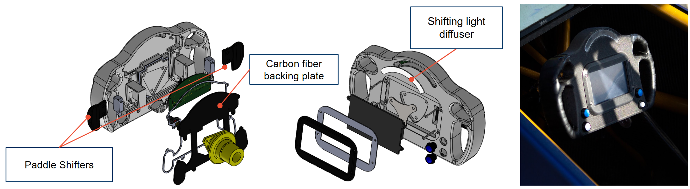
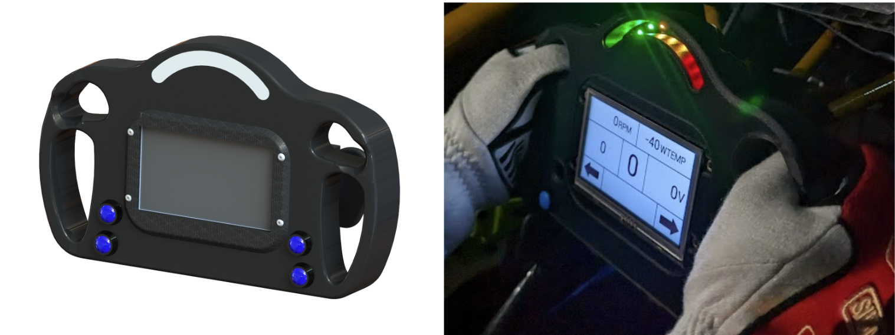
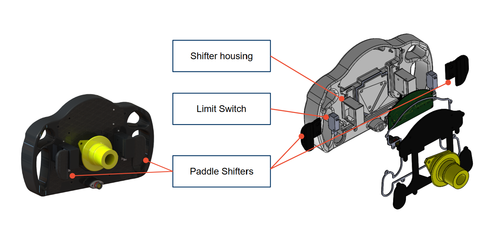
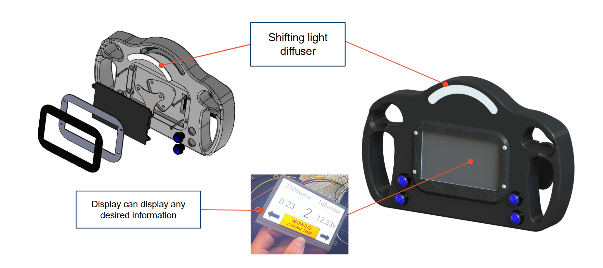
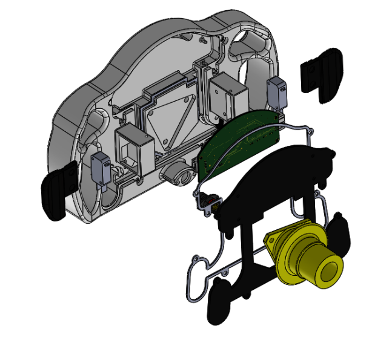

This was a collaborative project spanning mechanical and electrical subteams. My contributions covered the initial ergonomic design, handle geometry iterations, paddle shifter sensitivity tuning, and final electrical adjustments. Intermediary ergonomic work and electronics integration were carried out by teammates Noah Shermis and Brandon Chin respectively.

The B23 steering wheel was the team's first with an integrated display, replacing the external MoTeC ADL unit to reduce weight and display driver data directly on the wheel. The redesign addressed ergonomic shortcomings from the previous year, growing the wheel diameter, redesigning the handle geometry and paddle shape, and packaging a screen, PCB, function buttons, and all wiring cleanly. The wheel body was 3D printed on a MarkForged printer in carbon-fiber-reinforced nylon at 100% infill (to ensure that it will pass safety rules), with a removable carbon fiber backing plate housing all wiring and electronics.
Intermediary handle geometry was designed by Noah Shermis. I worked on initial handle design and took over for the final ergonomic refinement phase, iterating on grip shape and finger cutouts, adding handle grips, handle angle, and overall wheel diameter based on driver feedback from rough 3D printed prototypes.
The wheel diameter was increased to improve comfort and create more space for the integrated screen. Handle geometry was iteratively adjusted in CAD and re-printed until all drivers confirmed a comfortable, secure grip. Tennis grip tape was applied to the final handles for additional tactile comfort during racing.

The paddle shifting mechanism carried over the same core architecture from the previous year. I redesigned the paddle geometry for improved ergonomics, tuned actuation feel, and validated shift feedback with drivers.
The paddles were resized and reshaped to better guide fingers into position and tune paddle sensitivity and actuation feel to driver preferences. Paddle travel was reduced both before and after limit switch actuation to tighten shift feel. Magnets provide the return force after each shift, and the magnet arrangement was iterated on alongside paddle geometry to achieve a click that matched driver preference. Significant time was spent tuning actuation force and travel distance until each driver's feedback was satisfied.

The screen is bolted into the front face of the wheel and vibrationally isolated by rubber feet to protect it from chassis vibration during racing. Incorporating the screen directly into the wheel eliminated the need for the external MoTeC ADL, reducing weight and keeping driver-useful data within the natural sightline. The wheel also integrates 2 function buttons and 2 switches for driver convenience, all waterproofed with individual gaskets. A shifting light diffuser sits above the screen to display gear shift indicators.

The PCB is mounted to the removable carbon fiber backing plate, keeping it accessible for maintenance without disassembling the wheel body. Wiring runs from the display and buttons to the PCB, and from the PCB out to the main connector. All components were waterproofed using custom rubber gaskets.
Dedicated wiring channels are routed into the back face of the wheel body, guiding all wires cleanly from the screen and buttons to the connector. Wiring is potted with resin to secure it in place and prevent chafing under vibration. The carbon fiber backing plate covers the wiring for a clean finish and keeps everything contained within the wheel.

A shifting light diffuser sits above the screen to display gear shift indicators. The diffuser spreads the LED light evenly across the indicator strip, keeping shift cues visible in bright outdoor conditions without glare.
The wheel interfaces with the steering column via a quick-disconnect hub, allowing the wheel to be removed rapidly for driver ingress and egress — a requirement under FSAE rules. Initial 3D prints confirmed a good fit with the quick-release interface early in the design process.
The B23 steering wheel was successfully manufactured and raced, with the integrated screen functioning as designed. Driver feedback after the season noted that glancing at the wheel for data during racing was harder than anticipated compared to a dashboard-mounted display, as it required taking eyes off the road. As a result, the team opted not to continue the integrated screen approach on B24.
Despite this, the wheel was well-received overall and remained in use through B23's full race season and into B24 testing before being retired. The ergonomic improvements, handle geometry, and paddle shifter design were carried forward and informed future steering wheel iterations.
Iterative ergonomic design and driver-centered validation • Physical prototyping and 3D printing • MarkForged carbon-fiber-reinforced nylon manufacturing • Mechanical packaging of electronics • Paddle shifter mechanism design • Driver-specific sensitivity tuning • Cross-functional collaboration • CAD (SolidWorks) • Wiring routing and management • Waterproofing and sealing design • Design review process (CDR, DDR, FDR)
Email: jennifersili@berkeley.edu
LinkedIn: linkedin.com/in/jennifersili